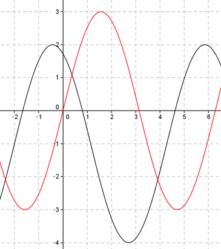

Aufgabe 251 Bestimmen Sie a, c und d für den dargestellten Graphen der Form y = a * sin (b * (x + c)) + d.  Abgelesen an y = -1 (von -2 bis 4,28) --> Periode = 2п 2п |b| = ---- = 1 2п Keine Spiegelung an y = -1 --> b = 1 asin(x + c) + d Abgelesen: Verschiebung von Punkt (0|0) in (-2|-1) --> Verschiebung entlang der y-Achse um -1 --> d = -1 asin(x + c) - 1 Verschiebung entlang y = -1 um 2 nach links --> c = 2 asin(x + 2) - 1 Abgelesen: |a| = 3 Keine Spiegelung an y = -1 --> a = 3 y = 3sin(x + 2) - 1 Zum Vergleich: 3sin x